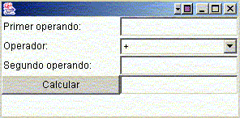

Ejercicios de introducción a AWT y Swing
Calculadora sencilla en AWT
Vamos a realizar una aplicación gráfica que simule una calculadora sencilla, en la clase Calculadora de la plantilla. La aplicación tendrá este aspecto:

En el primer cuadro de texto ponemos el primer operando, luego elegimos la operación a realizar (suma '+', resta '-', o multiplicación '*'), y en el segundo cuadro de texto ponemos el segundo operando. Pulsando en Calcular mostraremos el resultado en el tercer cuadro de texto.
Realizaremos la aplicación en AWT. El Frame tiene un tamaño de unos 300 de ancho por 150 de alto (método setSize(...) que hay al principio del constructor). Podéis emplear un GridLayout de 4 filas y 2 columnas, e ir colocando los controles en él (3 etiquetas, 3 cuadros de texto, 1 desplegable y 1 botón, en el orden que aparece en la figura).
En cuanto al evento del botón, leerá los valores enteros que haya en "Primer Operando" y "Segundo Operando" y los procesará con la operación seleccionada en "Operador". Para leer valores enteros podéis utilizar algo como:
int op1, op2;
op1 = Integer.parseInt(txtOp1.getText());
op2 = Integer.parseInt(txtOp2.getText());
if (((String)(operadores.getSelectedItem())).equals("+"))
txtRes.setText("" + (op1 + op2));
else ...
donde txtOp1 y txtOp2 serían los cuadros de texto del primer y segundo operandos, operadores sería el desplegable de operadores, y txtRes sería el cuadro de texto del resultado. Lo que hacemos es leer los dos enteros de los operandos, y según la operación seleccionada, mostrar el resultado correspondiente.
Calculadora sencilla en Swing
Cread una clase nueva llamada JCalculadora (en el mismo paquete que la clase Calculadora), y haced en ella una calculadora similar a la del ejercicio 1, pero utilizando Swing. Para convertir el programa a Swing tened en cuenta que hay que sustituir cada control de AWT (Button, Label, TextField, Choice, Frame, etc) por su correspondiente de Swing (JButton, JLabel, JTextField, JComboBox, JFrame, etc)
Formatos de texto (*)
Construir una clase llamada JFormatos (en el mismo paquete que las clases de los anteriores ejercicios), que herede de JFrame, y que contenga un área de texto (JTextArea) y un menú llamado Formato, con las siguientes opciones:
-
"Color Negro": será un JMenuItem que pondrá el color del texto del área de texto en negro.
-
"Color Rojo": otro JMenuItem que pondrá el color del texto del área de texto en rojo.
-
"Negrita": será un JCheckBoxMenuItem que cuando esté marcado pondrá el texto en negrita, y cuando no quitará la negrita del texto
-
"Cursiva": similar al anterior, pero para establecer o quitar la cursiva.
Se recomienda que la clase implemente la interfaz ActionListener:
public class JFormatos extends JFrame implements ActionListener
{
...
Después, en cada JMenuItem y JCheckBoxMenuItem, se añade como ActionListener la clase actual:
JMenuItem mi = new JMenuItem("Color Negro");
mi.addActionListener(this);
...
JCheckBoxMenuItem cmi = new JCheckBoxMenuItem("Negrita");
cmi.addActionListener(this);
Y en el actionPerformed que haya que implementar se hará una acción u otra según la acción seleccionada en el menú:
public void actionPerformed(ActionEvent e)
{
if (e.getActionCommand().equals("Color Negro"))
{
...
} else if (e.getActionCommand.equals("Negrita")) {
...
} else if...
}
Para cambiar el color del texto del cuadro se utiliza el método setForeground, pasándole el color a utilizar, con las constantes de la clase Color, o definiendo el color a mano utilizando los constructores de Color.:
txt.setForeground(Color.black);
Para cambiar el estilo de la fuente (negrita / cursiva), se establece una nueva fuente para el cuadro de texto, con el método setFont, donde se le pasa un objeto de tipo Font, construido con tres parámetros:
txt.setFont(new Font(tipo, estilo, tamaño));
txt.setFont(new Font("Arial", estilo, 16));
donde tipo será "Arial" en nuestro caso, y tamaño será 16. En cuanto al estilo será una combinación de negrita y cursiva, en el caso de que estén seleccionadas las opciones correspondientes del menú. Si estuviesen seleccionadas las dos, por ejemplo, pondríamos el texto en negrita y cursiva con:
txt.setFont(new Font("Arial", Font.BOLD | Font.ITALIC, 16));